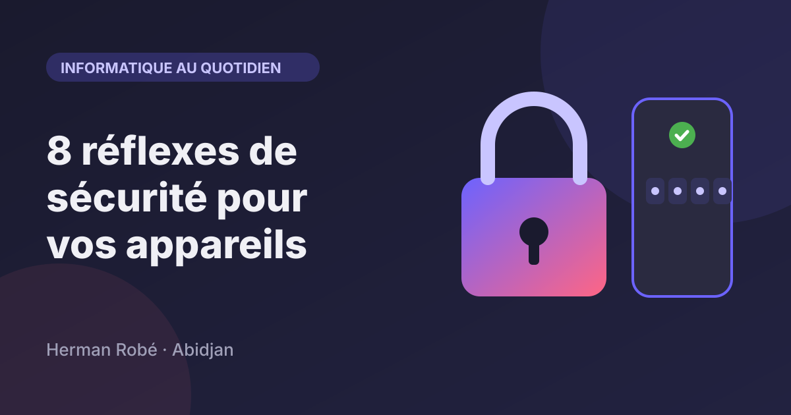
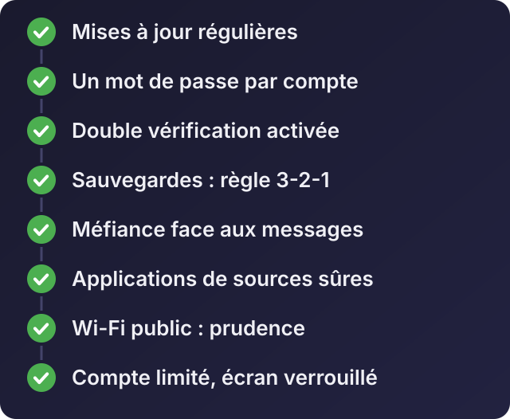

Accueil / Blog / Informatique au quotidien
Informatique au quotidienHuit réflexes de sécurité pour protéger vos appareils et vos applications

Écouter cet article · environ 4 min
La plupart des problèmes informatiques ne viennent pas de pirates très forts. Ils viennent d'un mot de passe réutilisé, d'une mise à jour repoussée, d'un message cru trop vite ou d'une sauvegarde qui n'existait pas. Voici huit réflexes. Ils ne coûtent presque rien, et ils règlent l'essentiel.

1. Faire les mises à jour
Les mises à jour de Windows, du navigateur, du téléphone et des applications corrigent des failles de sécurité connues. Tant qu'elles ne sont pas faites, la porte est ouverte. Activez les mises à jour automatiques et redémarrez quand l'appareil le demande.
2. Un mot de passe différent pour chaque compte
Si vous utilisez le même mot de passe partout, le vol d'un seul site donne accès à tous vos comptes. La solution pratique : un gestionnaire de mots de passe, qui en crée et retient des longs et uniques. Bitwarden en est un, avec une offre gratuite. Vous ne retenez qu'un seul mot de passe principal, long et que vous n'utilisez nulle part ailleurs.
3. La double vérification
Activez-la sur vos comptes importants : messagerie, réseaux sociaux, banque, et WhatsApp (la « vérification en deux étapes » dans les paramètres du compte). Même si quelqu'un trouve votre mot de passe, il lui manque le deuxième code. Ne communiquez jamais un code reçu par SMS, même à quelqu'un qui dit être du support.
4. Les sauvegardes : la règle 3-2-1
Un disque peut tomber en panne, un téléphone être volé, un rançongiciel chiffrer vos fichiers. Seule une sauvegarde vous sauve.
Gardez 3 copies de vos données importantes, sur 2 supports différents (par exemple l'ordinateur et un disque externe), dont 1 copie ailleurs (un espace en ligne ou un autre lieu). Et vérifiez de temps en temps que vous savez réellement récupérer un fichier.
5. Se méfier des messages
Les arnaques passent par WhatsApp, les SMS, les appels et les e-mails. Les signes qui doivent vous alerter :
- l'urgence : « votre compte sera bloqué dans une heure » ;
- une demande de code, de mot de passe ou de paiement que vous n'avez pas déclenchée ;
- un lien raccourci ou une adresse presque identique à celle de votre banque ou de votre opérateur ;
- un proche qui écrit d'un nouveau numéro et demande de l'argent : appelez l'ancien numéro pour vérifier ;
- une offre trop belle : gain, emploi payé d'avance, promotion incroyable.
Une règle simple : ni un opérateur, ni une banque, ni un service de paiement mobile ne vous demandera jamais votre code secret.
6. Installer les applications depuis des sources sûres
- Sur Android, installez depuis Google Play. Un fichier d'installation (APK) reçu par message ou téléchargé sur un site inconnu est l'une des façons les plus courantes d'attraper un virus.
- Si vous devez installer une application hors du magasin, par exemple une application en phase de test comme Sonnera, que j'ai conçue, téléchargez-la uniquement depuis la page officielle de son créateur, jamais depuis un lien reçu d'un tiers.
- Regardez les autorisations demandées : une lampe de poche n'a pas besoin de vos contacts.
- Sur ordinateur, téléchargez les logiciels sur le site officiel de l'éditeur.
7. Prudence avec le Wi-Fi public et le partage
Sur un Wi-Fi ouvert (café, hôtel, gare), évitez les opérations bancaires et les connexions importantes, ou utilisez vos données mobiles à la place. Chez vous, changez le mot de passe par défaut de votre box ou de votre routeur, et ne le donnez pas à n'importe qui.
8. Limiter les accès
- Un compte limité pour le travail de tous les jours, un compte administrateur seulement pour installer. Un virus a moins de pouvoir sur un compte limité.
- Verrouillez l'écran de l'ordinateur et du téléphone, avec un code ou une empreinte.
- En entreprise, retirez les accès d'une personne dès qu'elle quitte son poste, et donnez à chacun seulement ce dont il a besoin.
Pour une entreprise
Ces huit réflexes valent aussi pour une équipe, avec trois ajouts :
- Écrire qui a accès à quoi (messagerie, site, hébergement, comptes de réseaux sociaux), et qui est le responsable.
- Former les employés aux arnaques : c'est souvent là que tout commence.
- Avoir une personne à qui s'adresser en cas d'incident, avant qu'il arrive.
Si vous voulez sécuriser vos appareils ou ceux de votre équipe, écrivez-moi : je peux faire le tour des points faibles avec vous et mettre en place l'essentiel.